Multi-Factor ANOVA
Learning Objectives
- Write out the general multi-factor ANOVA model with main effects and interactions.
- Distinguish two-way interactions from three-way interactions using interaction plots.
- Fit a multi-factor ANOVA model in R and test for interactions top-down.
- Chapter 13 of the textbook.
The General Model
With three categorical variables (\(A\), \(B\), \(C\)):
\[Y_{ijk\ell} = \mu + \alpha_i + \beta_j + \gamma_k + (\alpha\beta)_{ij} + (\alpha\gamma)_{ik} + (\beta\gamma)_{jk} + (\alpha\beta\gamma)_{ijk} + \epsilon_{ijk\ell}\]
| Term | Meaning |
|---|---|
| \(\mu\) | baseline mean |
| \(\alpha_i, \beta_j, \gamma_k\) | main effects |
| \((\alpha\beta)_{ij}, (\alpha\gamma)_{ik}, (\beta\gamma)_{jk}\) | two-way interactions |
| \((\alpha\beta\gamma)_{ijk}\) | three-way interaction |
- A two-way interaction means the effect of one variable depends on the level of another.
- A three-way interaction means the two-way interaction between \(A\) and \(B\) itself changes depending on the level of \(C\).
Interaction Plots for Three Factors
With three factors, interaction plots use:
- x-axis: one variable.
- Color/line: a second variable.
- Facets: the third variable.
The key question: do the lines look parallel within each facet, and do the patterns look the same across facets?
No Interactions
Parallel lines, same pattern in every facet — no interactions at all:
Two-Way Interaction Between \(x\) and \(y\) Only
When only \(x\) and \(y\) interact (but \(z\) has no interaction with either), we can check different arrangements of the three variables across the axes and facets.
Facets = \(z\), color = \(y\): Non-parallel lines within each facet, but the same non-parallel pattern in every facet. The \(x\):\(y\) interaction is the same regardless of \(z\).
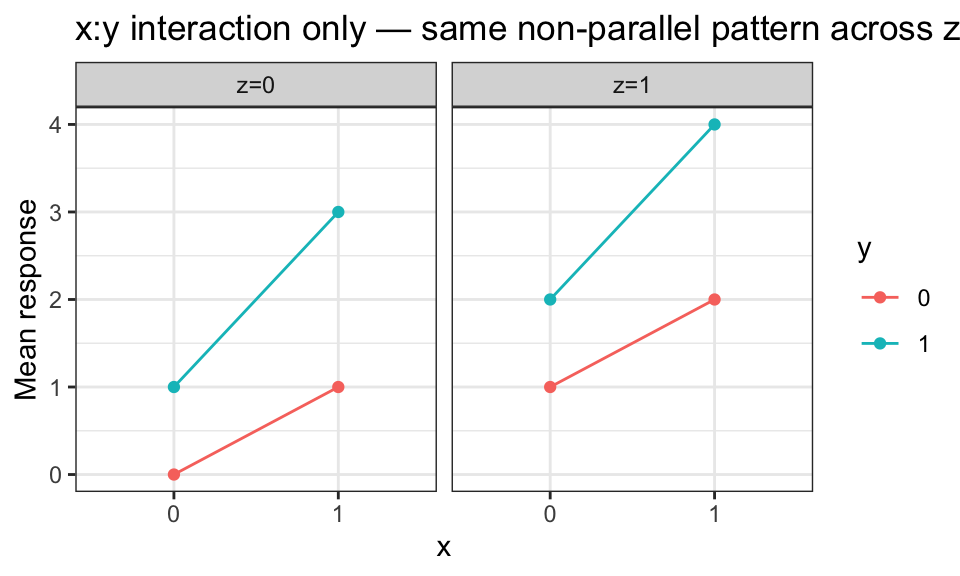
Facets = \(y\), color = \(z\): Parallel lines within each facet (\(x\) and \(z\) do not interact), but the gap between lines shifts across facets of \(y\) (because \(x\):\(y\) interact, so the effect of \(x\) depends on \(y\)).
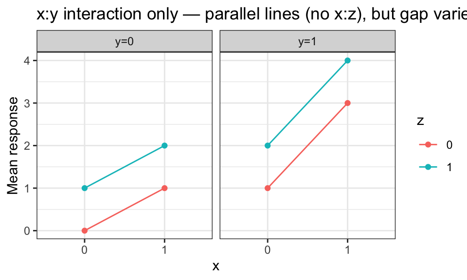
Facets = \(y\), x-axis = \(z\), color = \(x\): \(x\) and \(z\) do not interact, so lines are parallel within each facet and the pattern is the same across facets of \(y\).
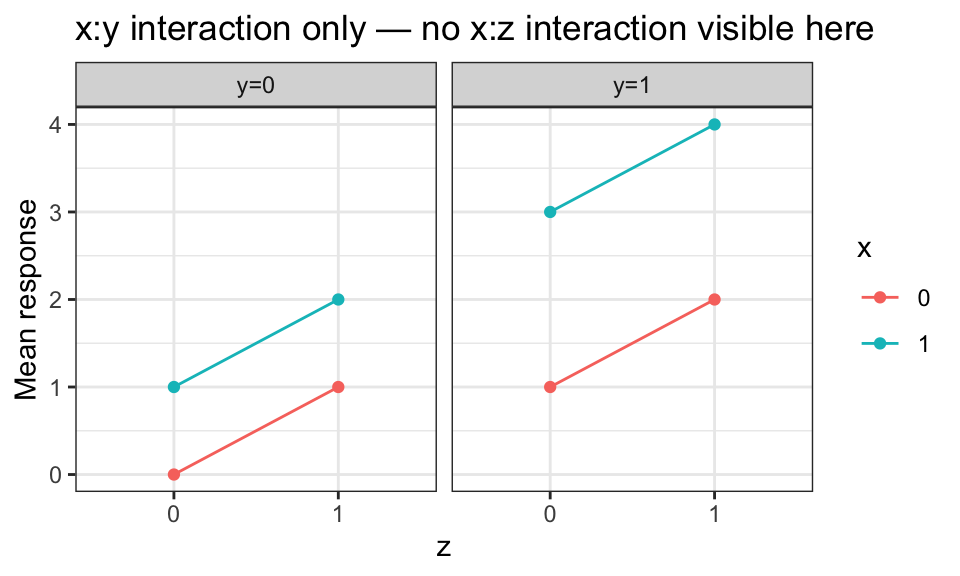
Facets = \(x\), x-axis = \(z\), color = \(y\): \(y\) and \(z\) do not interact, so lines are parallel. But the gap between \(y\) lines differs across facets of \(x\) — again reflecting the \(x\):\(y\) interaction.
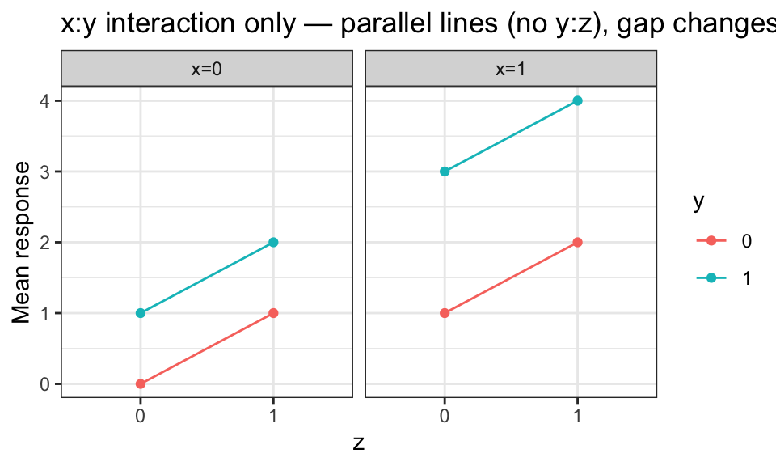
Two-Way Interactions Between All Pairs (No Three-Way)
When all three pairs interact but there is no three-way interaction, non-parallel lines appear within each facet, and the non-parallel pattern changes somewhat across facets — but the change itself is consistent (not dependent on the third variable in a deeper sense).
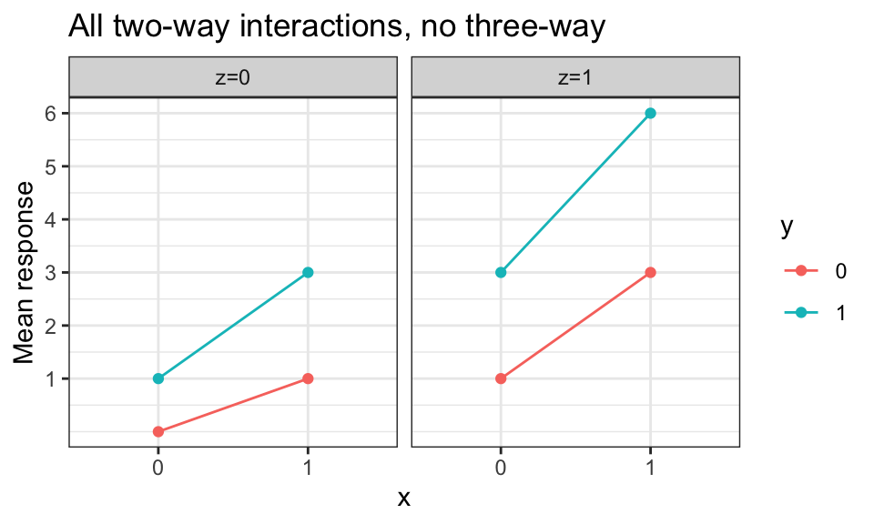
Three-Way Interaction
Non-parallel lines and the interaction pattern itself changes across facets:

- The relationship between \(x\) and \(y\) is different at different levels of \(z\).
Case Study: Poker Winnings
Research question: Does skill level or hand quality affect poker winnings? Does the type of game (fixed vs. no limit) interact with skill? These data come from Meyer et al. (2013).
Variables:
Skill:"Expert"or"Average"— skill level of the player.Hand:"Bad","Neutral", or"Good"— quality of the cards dealt.Limit:"Fixed"or"None"— whether the game has a fixed betting limit.Cash: final cash balance (in dollars) after a session of play.
poker <- read_csv("../data/poker.csv") |>
mutate(Hand = factor(Hand, levels = c("Bad", "Neutral", "Good")))
glimpse(poker)Rows: 300
Columns: 4
$ Skill <chr> "Expert", "Expert", "Expert", "Expert", "Expert", "Expert", "Exp…
$ Hand <fct> Bad, Bad, Bad, Bad, Bad, Bad, Bad, Bad, Bad, Bad, Bad, Bad, Bad,…
$ Limit <chr> "Fixed", "Fixed", "Fixed", "Fixed", "Fixed", "Fixed", "Fixed", "…
$ Cash <dbl> 4.00, 5.55, 9.45, 7.19, 5.71, 5.32, 8.52, 4.06, 4.97, 6.18, 6.55…table(poker$Skill, poker$Hand, poker$Limit), , = Fixed
Bad Neutral Good
Average 25 25 25
Expert 25 25 25
, , = None
Bad Neutral Good
Average 25 25 25
Expert 25 25 25The design is balanced: equal sample sizes across all 12 combinations of the three factors.
Interaction Plots
With three factors we have \(3 \times 2 = 6\) ways to assign variables to axes and facets. Looking at all of them gives a fuller picture of which interactions may be present.
ggplot(poker, aes(x = Skill, y = Cash, color = Hand, group = Hand)) +
stat_summary(fun = mean, geom = "line") +
stat_summary(fun = mean, geom = "point") +
facet_wrap(~Limit, labeller = label_both) +
labs(x = "Skill", y = "Mean cash ($)", color = "Hand",
title = "x = Skill, color = Hand, facets = Limit")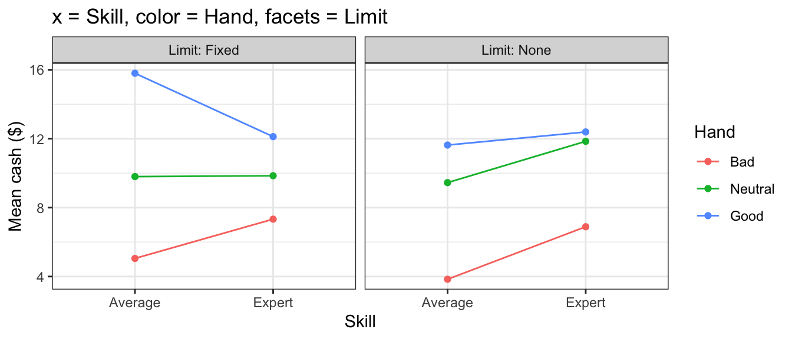
ggplot(poker, aes(x = Hand, y = Cash, color = Skill, group = Skill)) +
stat_summary(fun = mean, geom = "line") +
stat_summary(fun = mean, geom = "point") +
facet_wrap(~Limit, labeller = label_both) +
labs(x = "Hand", y = "Mean cash ($)", color = "Skill",
title = "x = Hand, color = Skill, facets = Limit")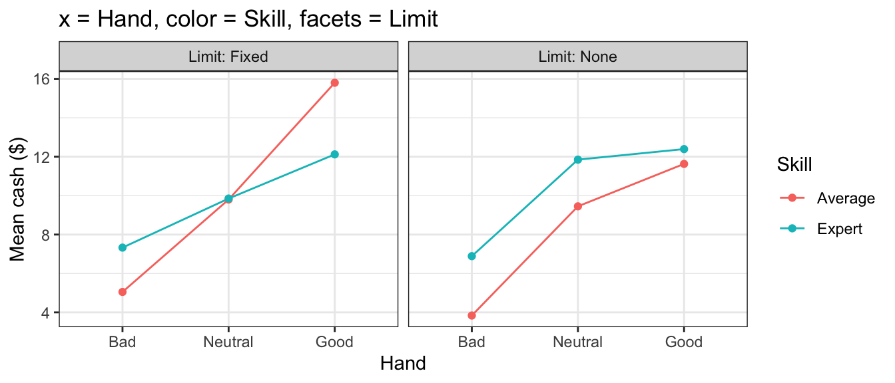
ggplot(poker, aes(x = Limit, y = Cash, color = Skill, group = Skill)) +
stat_summary(fun = mean, geom = "line") +
stat_summary(fun = mean, geom = "point") +
facet_wrap(~Hand, labeller = label_both) +
labs(x = "Limit", y = "Mean cash ($)", color = "Skill",
title = "x = Limit, color = Skill, facets = Hand")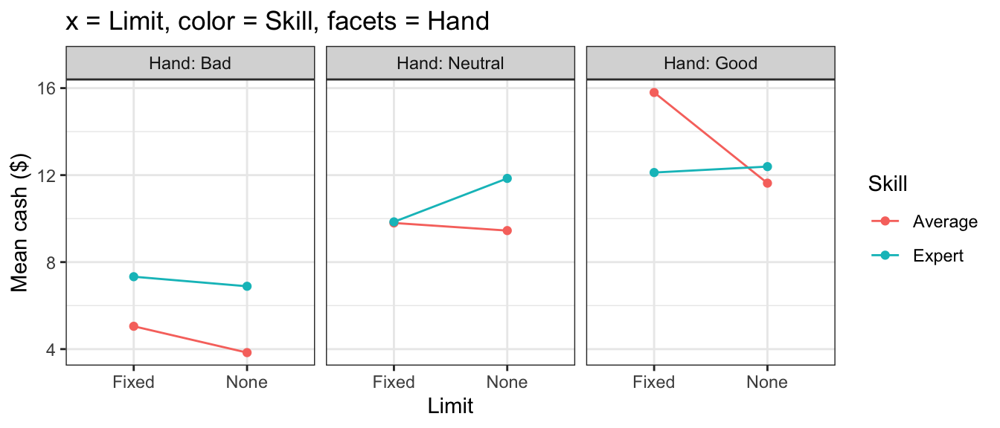
ggplot(poker, aes(x = Skill, y = Cash, color = Limit, group = Limit)) +
stat_summary(fun = mean, geom = "line") +
stat_summary(fun = mean, geom = "point") +
facet_wrap(~Hand, labeller = label_both) +
labs(x = "Skill", y = "Mean cash ($)", color = "Limit",
title = "x = Skill, color = Limit, facets = Hand")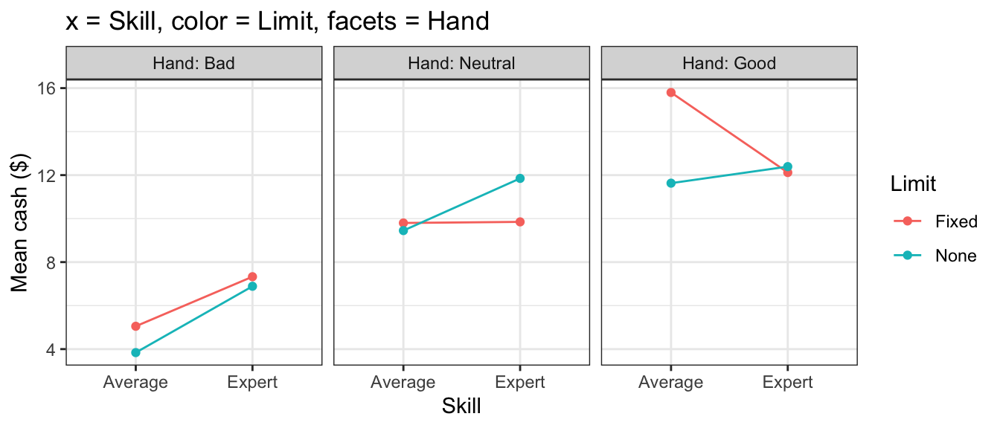
ggplot(poker, aes(x = Hand, y = Cash, color = Limit, group = Limit)) +
stat_summary(fun = mean, geom = "line") +
stat_summary(fun = mean, geom = "point") +
facet_wrap(~Skill, labeller = label_both) +
labs(x = "Hand", y = "Mean cash ($)", color = "Limit",
title = "x = Hand, color = Limit, facets = Skill")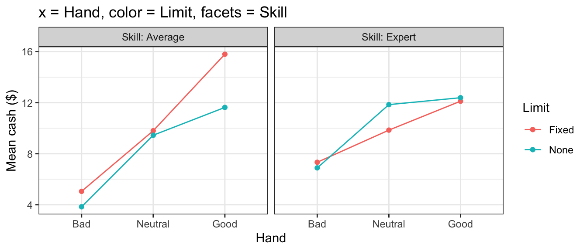
ggplot(poker, aes(x = Limit, y = Cash, color = Hand, group = Hand)) +
stat_summary(fun = mean, geom = "line") +
stat_summary(fun = mean, geom = "point") +
facet_wrap(~Skill, labeller = label_both) +
labs(x = "Limit", y = "Mean cash ($)", color = "Hand",
title = "x = Limit, color = Hand, facets = Skill")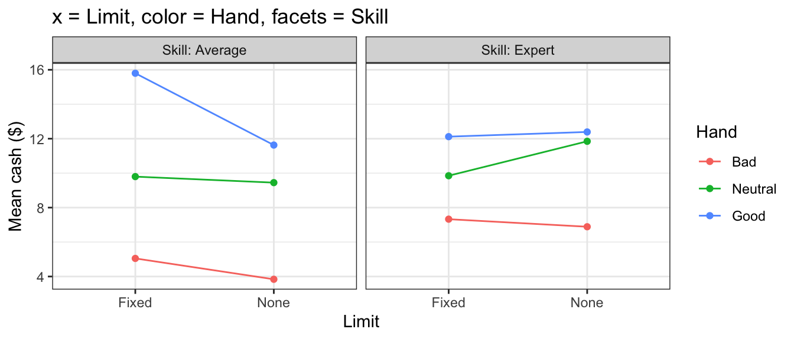
Observations from the plots:
- The effect of
HandonCashappears to differ between experts and average players (non-parallel lines when Skill is on the facet or color), suggesting a Skill × Hand interaction. - The effect of
Limitalso appears to differ between skill levels, suggesting a Skill × Limit interaction. - The Hand × Limit interaction looks less clear.
Top-Down Testing Strategy
Start with the full interaction model (all main effects + all interactions). Test the three-way interaction first; if not significant, drop it and test the two-way interactions.
aout_full <- aov(Cash ~ Skill * Hand * Limit, data = poker)
tidy(aout_full)# A tibble: 8 × 6
term df sumsq meansq statistic p.value
<chr> <dbl> <dbl> <dbl> <dbl> <dbl>
1 Skill 1 49.2 49.2 2.84 9.31e- 2
2 Hand 2 2647. 1323. 76.4 2.39e-27
3 Limit 1 31.7 31.7 1.83 1.77e- 1
4 Skill:Hand 2 219. 110. 6.32 2.05e- 3
5 Skill:Limit 1 119. 119. 6.88 9.19e- 3
6 Hand:Limit 2 97.3 48.6 2.81 6.19e- 2
7 Skill:Hand:Limit 2 42.4 21.2 1.22 2.96e- 1
8 Residuals 288 4987. 17.3 NA NA - The three-way interaction
Skill:Hand:Limitis not significant — drop it.
aout_2way <- aov(Cash ~ Skill + Hand + Limit +
Skill:Hand + Skill:Limit + Hand:Limit,
data = poker)
tidy(aout_2way)# A tibble: 7 × 6
term df sumsq meansq statistic p.value
<chr> <dbl> <dbl> <dbl> <dbl> <dbl>
1 Skill 1 49.2 49.2 2.83 9.33e- 2
2 Hand 2 2647. 1323. 76.3 2.39e-27
3 Limit 1 31.7 31.7 1.83 1.78e- 1
4 Skill:Hand 2 219. 110. 6.31 2.07e- 3
5 Skill:Limit 1 119. 119. 6.87 9.24e- 3
6 Hand:Limit 2 97.3 48.6 2.80 6.22e- 2
7 Residuals 290 5030. 17.3 NA NA Skill:HandandSkill:Limitare significant;Hand:Limitis not.- Drop
Hand:Limitand adopt the model with only those two interactions.
aout_sub <- aov(Cash ~ Skill + Hand + Limit + Skill:Hand + Skill:Limit,
data = poker)
tidy(aout_sub)# A tibble: 6 × 6
term df sumsq meansq statistic p.value
<chr> <dbl> <dbl> <dbl> <dbl> <dbl>
1 Skill 1 49.2 49.2 2.80 9.53e- 2
2 Hand 2 2647. 1323. 75.4 4.07e-27
3 Limit 1 31.7 31.7 1.80 1.80e- 1
4 Skill:Hand 2 219. 110. 6.24 2.23e- 3
5 Skill:Limit 1 119. 119. 6.78 9.67e- 3
6 Residuals 292 5127. 17.6 NA NA Residual Plot
augment(aout_sub) |>
ggplot(aes(x = .fitted, y = .resid)) +
geom_point(alpha = 0.4) +
geom_hline(yintercept = 0, lty = 2, color = "red") +
labs(x = "Fitted values", y = "Residuals")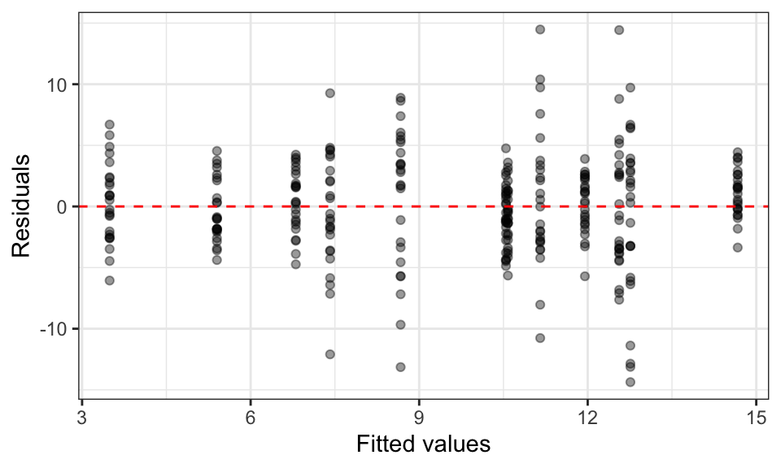
No obvious patterns — the equal-variance assumption looks reasonable.
Coefficient Estimates
lm_sub <- lm(Cash ~ Skill + Hand + Limit + Skill:Hand + Skill:Limit,
data = poker)
tidy(lm_sub)# A tibble: 8 × 5
term estimate std.error statistic p.value
<chr> <dbl> <dbl> <dbl> <dbl>
1 (Intercept) 5.40 0.684 7.89 6.04e-14
2 SkillExpert 1.40 0.968 1.45 1.48e- 1
3 HandNeutral 5.18 0.838 6.18 2.14e- 9
4 HandGood 9.27 0.838 11.1 5.51e-24
5 LimitNone -1.91 0.684 -2.79 5.59e- 3
6 SkillExpert:HandNeutral -1.44 1.19 -1.21 2.25e- 1
7 SkillExpert:HandGood -4.12 1.19 -3.48 5.79e- 4
8 SkillExpert:LimitNone 2.52 0.968 2.60 9.67e- 3Using the notation \(\alpha\) for Skill, \(\beta\) for Hand, \(\gamma\) for Limit (reference levels: Average, Bad, Fixed):
| Parameter | Level | Estimate |
|---|---|---|
| \(\mu\) | — | 5.400 |
| \(\alpha_1\) | Average | 0 (reference) |
| \(\alpha_2\) | Expert | 1.404 |
| \(\beta_1\) | Bad | 0 (reference) |
| \(\beta_2\) | Neutral | 5.180 |
| \(\beta_3\) | Good | 9.270 |
| \(\gamma_1\) | Fixed | 0 (reference) |
| \(\gamma_2\) | None | −1.910 |
| \((\alpha\beta)_{11}\) | Average × Bad | 0 (reference) |
| \((\alpha\beta)_{12}\) | Average × Neutral | 0 (reference) |
| \((\alpha\beta)_{13}\) | Average × Good | 0 (reference) |
| \((\alpha\beta)_{21}\) | Expert × Bad | 0 (reference) |
| \((\alpha\beta)_{22}\) | Expert × Neutral | −1.440 |
| \((\alpha\beta)_{23}\) | Expert × Good | −4.124 |
| \((\alpha\gamma)_{11}\) | Average × Fixed | 0 (reference) |
| \((\alpha\gamma)_{12}\) | Average × None | 0 (reference) |
| \((\alpha\gamma)_{21}\) | Expert × Fixed | 0 (reference) |
| \((\alpha\gamma)_{22}\) | Expert × None | 2.520 |
Interpretations
Skill × Hand interaction: How much does hand quality matter?
The mean difference between players with good hands and players with bad hands depends on skill level. For expert players:
\[\mu_{\text{Expert, Good}} - \mu_{\text{Expert, Bad}} = \beta_3 + (\alpha\beta)_{23} = 9.270 - 4.124 = 5.146\]
For average players (where \((\alpha\beta)_{13} = 0\) by definition):
\[\mu_{\text{Average, Good}} - \mu_{\text{Average, Bad}} = \beta_3 + (\alpha\beta)_{13} = 9.270 + 0 = 9.270\]
Average players gain more from receiving a good hand than experts do. Experts can partially compensate for a bad hand through skill, so hand quality matters less to them.
Skill × Limit interaction: Who benefits from a no-limit game?
The mean difference between no-limit and fixed-limit games by skill level:
\[\mu_{\text{Average, None}} - \mu_{\text{Average, Fixed}} = \gamma_2 = -1.910\]
\[\mu_{\text{Expert, None}} - \mu_{\text{Expert, Fixed}} = \gamma_2 + (\alpha\gamma)_{22} = -1.910 + 2.520 = 0.610\]
On average, removing the betting limit hurts average players (−$1.91) but helps experts (+$0.61). The no-limit format rewards skill: experts can leverage their advantage with larger bets.
R Formula Quick Reference
| Formula | Interpretation |
|---|---|
A + B + C |
main effects only (additive) |
A * B + C |
A, B, C, and A:B |
A * B * C |
all main effects and all interactions |
(A + B + C)^2 |
all main effects and all two-way interactions |
A:B |
A×B interaction term only (no main effects) |
Exercises
1. Using the npk data (built into R — run data(npk) to load):
Create an interaction plot of
yieldvs.N, colored byP, faceted byK. Does the plot suggest any N × P interaction?Create an interaction plot of
yieldvs.N, colored byK, faceted byP. Does this plot suggest any N × K interaction?Formally test whether the three-way interaction
N:P:Kis significant usingtidy(aov(yield ~ N * P * K, data = npk)). Report the \(p\)-value and conclusion.Drop non-significant two-way interactions and interpret the significant main effects in plain language.
2. Explain in plain language the difference between a two-way and a three-way interaction. Give an example from everyday life (not from this lecture) of:
A plausible two-way interaction.
A plausible three-way interaction.
3. An experiment studies the effects of exercise type (Cardio vs. Strength), diet (Low-carb vs. High-carb), and sleep quality (Poor vs. Good) on weight loss.
Write out the full interaction ANOVA model using the notation from this lecture. Identify which terms are main effects, which are two-way interactions, and which is the three-way interaction.
If you were conducting this study, what testing strategy would you use? Start with what model and what test?
How many parameters does the full interaction model have (including the baseline)? How many parameters does the additive model have?
4. In the poker case study, the fitted model included Skill:Hand and Skill:Limit interactions.
Using the coefficient table above, compute the estimated mean cash for an expert player with a good hand in a no-limit game.
Compute the estimated mean cash for an average player with a neutral hand in a fixed-limit game.
Based on the coefficients, does having no limit help or hurt average players? By how much?
References
Meyer, Gerhard, Marc von Meduna, Tim Brosowski, and Tobias Hayer. 2013. “Is Poker a Game of Skill or Chance? A Quasi-Experimental Study.” Journal of Gambling Studies 29 (3): 535–50. https://doi.org/10.1007/s10899-012-9327-8.